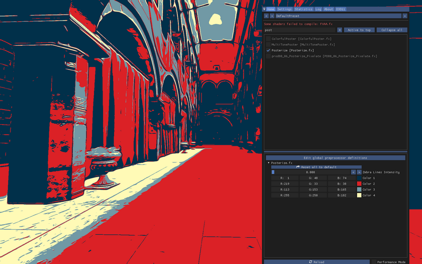
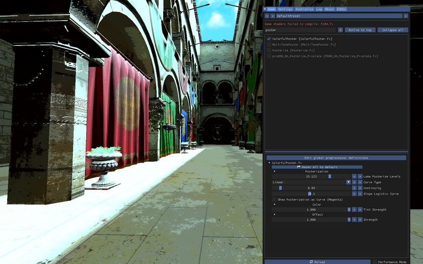
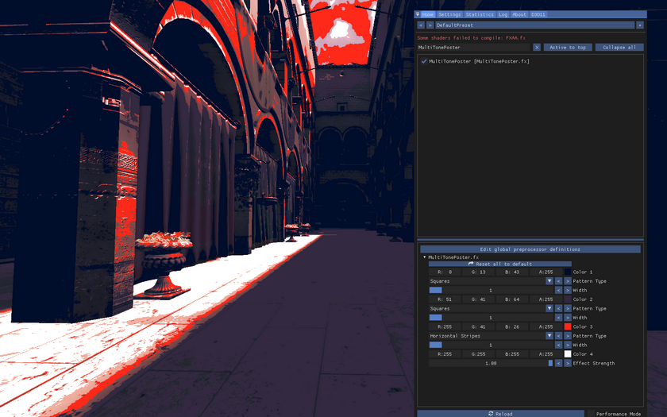
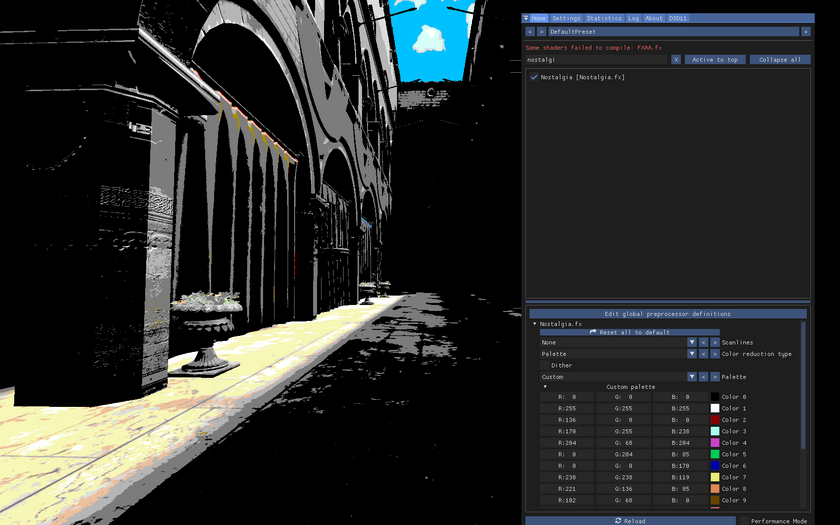
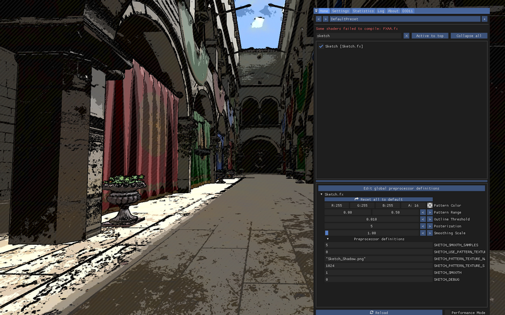

着色器目录
本指南旨在介绍 ReShade 中各类可用的功能，并说明为何选择使用 ReShade 进行后期处理，而非借助常规编辑软件。
我整理了所有能找到的代码仓库中的效果，并附上了一些（希望通俗易懂的）说明。由于我对每个着色器并非都有深入了解，如果你认为某个说明可以写得更好、有更多技巧，或想深入介绍某个着色器的工作原理，欢迎提交 pull request 或联系 Framed 的成员来更新本指南。如果列表中有过时的着色器、链接并非最新版本，或者你希望添加更多着色器，同样欢迎贡献。
如果你不熟悉 ReShade，想了解其使用方法、着色器排序、着色器复制以及其他技巧，请务必查阅 安装与配置 ReShade 指南。
本指南以筛选在截图后期处理中有用的着色器为目标，因此未收录 CRT 着色器或手电筒着色器等。此外，由于大量曲线、饱和度、对比度等着色器功能大同小异（少数使用了特定算法的除外），我也未将其全部收入。如果你认为某个着色器值得添加，欢迎提交贡献。与此同时，针对上述类型的着色器，我已收录了 prod 的大部分作品。
如需进一步了解各着色器的工作原理或使用技巧，可查阅着色器代码中的注释、所在代码仓库的 readme 文件，或 ReShade 论坛上关于该着色器的介绍帖。
如果你计划单独下载每个着色器，请确保同时下载必要的文件（如 .fxh 头文件）以及配套的纹理资源。
基础必备
这些是我认为截图不可或缺的着色器。如果你只能从本列表中带走一些收获，那一定在这里。
景深
相比其他后期处理软件，使用 ReShade 的优势之一（除显而易见的实时后期处理外）在于能够利用深度缓冲。借助深度缓冲，景深等效果可以轻松实现；而如果使用其他软件来实现同样的效果，不仅耗时更长，效果也可能不如 ReShade。
- CinematicDOF：基于多篇科学论文，是最"真实"且使用最广泛的景深着色器。具备近景溢色、可配置的高光效果、高性能、易用的对焦代码以及出色的散景效果。请参阅 本站完整指南。
- LightDOF：对性能影响小，易于配置。
- quintDoF：一款致力于为电子游戏带来电影级散景模糊的景深着色器。提供极高质量的景深效果，具备艺术化控制选项，非常适合截图和游戏体验。其散景光斑可呈多边形、圆形或介于两者之间的任意形状，还具备光斑遮蔽功能（使散景光斑看起来像两个圆形的布尔交集）以及散景边缘的色差效果。这些都通过独特的基于梯度的算法实现，计算开销极低，与场景复杂度或模糊设置无关。为防止对焦区域的颜色渗入模糊区域，该着色器采用了高度精密的解决方案，能够彻底消除此类瑕疵，同时避免了常见方案的性能开销。
- qUINTPhysical DoF：Marty 的新款景深着色器，具备非常出色的散景高光效果。
去色带
- Deband：你是否见过渐变无法平滑过渡的情况？这被称为色带。它发生在可用色调不足以重现平滑渐变时。这个着色器正是为了解决这一问题。请务必下载链接中的版本，因为它有一个选项可以调整着色器作用的深度范围（通常应仅应用于背景）。Deband 是官方 ReShade 着色器的一部分，ReShade 安装程序始终会为你安装。
- qUINT_deband.fx：修复块状色彩渐变，还原被压缩的纹理细节。
光照着色器
将这些着色器称为"必备"可能不太准确，但我发现，如果使用得当，它们能大幅提升构图效果。它们的基本作用是在场景中模拟点光源，在照亮场景的同时绘制阴影。对于为人像增添层次感极为有用，但请注意，由于它使用深度缓冲来"理解"场景和光照，其表现与游戏原生光照并不完全相同：
- NiceGuy Lamps：最多可添加 4 个点光源，颜色、亮度、位置均可自定义，并可选配雾效和屏幕空间阴影（支持自定义软阴影）。雾效强度、镜面反射强度和镜面反射粗糙度均完全可调。反射使用 GGX 模型（归功于 LVutner），漫反射使用 Lambert 模型。雾效为模拟效果。
- Marty's ReLight：Marty 对该理念的独特诠释。得益于平滑法线算法，光照效果与游戏原生基本无异。凭借 Marty 多年的 RTGI 经验，可以预见其背后在光照行为方面投入了大量心血，甚至有过之而无不及。
《巫师 3》，作者：barkar-b
测试
《瘟疫传说：安魂曲》，作者：Dread
截图
构图工具
用于构图与裁剪的着色器。
- AspectRatioComposition：添加黑边以模拟所需宽高比，便于后期裁剪。此外，你还可以在黑边内显示分割线，以引导三分法或五分法等构图规则。
- AspectRatioMultiGrid：具备与 AspectRatioComposition 相同的功能，并额外支持多种网格类型同时使用、反转网格颜色以便查看、创建宽高比列表以便快速选择等更多功能。
- AspectRatioSuit：与前一个着色器类似，但允许同时显示多个宽高比分隔线，便于一次性对比评估所有选项。屏幕上线条过多时可能难以辨别各宽高比，请务必编辑
ASPECT_RATIO_SUITE_VALUES定义以删除或添加宽高比。 - Aspect Ratio：如果图像出现拉伸，此着色器可以帮助修复。建议使用其他后期处理软件来处理（或通过裁剪而非使用游戏不支持的宽高比），但如有需要，此选项也可使用。
直方图
如果你希望在 ReShade 中拍摄和编辑时查看直方图，与在 Photoshop 或 Lightroom 中看到的直方图相同。
- Histogram：在屏幕上显示直方图。
- HistogramCompute：与前者相同，但速度更快（不支持 DX9）。
热采样
热采样的副作用是，当游戏以高分辨率渲染时，你的屏幕上只能看到游戏画面的一部分。这些着色器会以缩略图预览/画中画形式渲染游戏，使你可以在显示器上看到完整的游戏窗口。这也有助于将截图作为缩略图来查看，以了解其在较小尺寸下的效果和可读性——这也是大多数人第一次看到你的截图时最可能看到的尺寸。
- HotsamplingHelper：如上所述，将图像的缩小版绘制到屏幕上。叠加层的大小和位置均可配置。
- FreezeShot：与前一个着色器类似，但增加了旋转缩略图的功能，因此可用于预览竖向截图旋转后的效果（在不使用竖向宽高比的情况下）。该着色器还有更多与此处目的无关的选项，将在后文介绍。请务必开启 Black Background 选项，并将 Layer Depth 值设为 1，以获得更顺畅的热采样体验。
放大镜
MagnifyingGlass：有时你可能希望放大屏幕的特定区域，例如检查色带问题。此着色器可以实现这一功能。
"图形改善"
标题加引号是因为它可能有些误导。我的意思是，这些着色器在大多数情况下都能改善场景的视觉效果，尤其适用于老游戏。 值得指出的是，这些着色器大多具有场景依赖性，因此你需要自行判断某个着色器是否能为特定场景带来提升。 在列举这些着色器之前，我先介绍一个可与其余着色器配合使用的着色器。
- ReVeil：类似于 Photoshop 中的去雾选项，但还允许事后重新引入雾效。与环境光遮蔽或光线追踪效果配合使用时极为实用，可使其看起来更原生。将不希望显示在烟雾/薄雾上方的着色器放置在
Reveil_Top和Reveil_Bottom效果技法之间。RadiantGI 原生支持 reveil，无需额外配置。
抗锯齿
你可能已经熟悉这个术语，如果不熟悉——抗锯齿可以帮助减少游戏中看到的"锯齿"。即使游戏本身提供了抗锯齿选项，这些着色器在游戏抗锯齿破坏深度缓冲（如 MSAA）或抗锯齿实现较为老旧的情况下也很有用。这些着色器使用了不同类型的抗锯齿的不同实现方式；SMAA 通常效果出色，但欢迎自行尝试，找到最适合你的方案。
- iMMERSE Anti Aliasing：针对当代硬件进行了大量优化的改良版 SMAA。其设计目标是在视觉输出上与常规 SMAA 保持一致，即这些优化不以牺牲视觉质量为代价。
- SMAA：使用 SMAA 技术进行抗锯齿处理——参见 http://www.iryoku.com/smaa/。请务必同时下载 .fxh 文件。
- DLLA_plus：方向性局部抗锯齿增强版。
- NFAA：法线滤波抗锯齿。
- Temporal AA
- FXAA
- BIAA：双线性插值抗锯齿。基于 Epic Games 的时间性抗锯齿实现。
- Pirate_FXAA
- TAA：另一种 TAA 实现。
- ASSMAA
- FSMAA
- HQAA：混合高质量抗锯齿。将 FXAA 和 SMAA 合并为单一着色器，并针对边缘检测最大化和模糊最小化进行了自定义优化。
- LXAA
- CMAA2
- CMAA2 (LordOfLunacy implementation)
- TFAA：请务必按照 readme.md 中的说明操作。
- FAAA：基于 Timothy Lottes 的 PC FXAA v3。
光线追踪
你可能已经接触过这个术语。光线追踪技术旨在更精确地模拟光线和阴影。尽管游戏内置的此类技术通常比 ReShade 实现更为精准，但大多数游戏并不原生支持光线追踪，因此这些着色器非常有用，尤其适用于老游戏。
- DH_UBER_RT：一体化光线追踪着色器（全局光照、环境光遮蔽和屏幕空间反射）。
- dh_rtgi
- Marty's RTGI：耗费了大量心血，是光线追踪全局光照的首选。你可能需要学习如何对其进行配置。
- RadiantGI：BlueSky 实现的全局光照加次表面散射。可与 Marty 的 RTGI 配合使用，但单独使用效果也非常好。你需要学习如何使用它。
- NGLighting：请记得从仓库下载 NGLightingUI.fxh 文件。
环境光遮蔽
环境光遮蔽旨在基于场景几何体模拟阴影。与光线追踪一样，它对老游戏尤为有用。
- iMMERSE MXAO：Marty 最新的环境光遮蔽着色器，是 qUINT MXAO 效果的继任者，应当是目前最先进的 SSAO 实现之一。
- GloomAO：屏幕空间方向性遮蔽。
- qUINT_MXAO：算法上与 GTAO 和 CACAO 等最新一代技术类似，但具备一些相对独特的特性，如间接光照、深度衍生法线贴图的平滑滤波器、无额外开销的双层选项等。高度可配置，易于调整。
- qUINT_MXGI：本质上是添加了全局光照的 MXAO，或者说是去除光线追踪的 RTGI。计划在某个时间点与 MXAO v2 合并，目前两者是独立的着色器。
- qUINTMXAO v2：基于计算着色器的 MXAO 版本，速度提升 2-4 倍。
- MC_SSAO
- MXAO
- SSAO (HBAO, RayAO, HBAO, SSGI, AO_SAO, SSAO)：SSAO 着色器包含括号中列出的所有环境光遮蔽技术。
- PPFX_SSDO
反射
- qUINT_ssr：利用图像中已有的数据为场景添加反射。作为屏幕空间技术，它与所有同类实现一样，存在屏幕外内容无法被反射的局限，也无法区分反射与非反射表面，会对所有内容叠加一层反射效果。
- ReflectiveBumpMapping：qUINT_ssr 的前一版本（据我理解）。收录于此仅供存档参考，如有可能请使用上述着色器（qUINT_ssr）。
- Scatter：为 qUINT_SSR 添加粗糙度，或对 DH_RTGI 进行降噪处理（截图对比）。如需同时实现两者，请复制着色器文件，使着色器栈中有两组。已弃用：强烈建议改用 NiceGuy Lighting。
泛光
顾名思义，泛光着色器用于在场景中模拟泛光效果。
- AmbientLight：将泛光与眼部适应和镜头污垢效果相结合。链接中的着色器版本提供了抖动开关，由于开启抖动可能产生瑕疵，强烈建议关闭。如果着色器更新，此链接中将不再是最新版本。
- BesselBloom：不同于泛光通常使用的高斯滤波器，此着色器改用二阶 Bessel IIR 滤波器的近似实现。
- MagicBloom
- NeoBloom
- PD80_02_Bloom：基于场景亮度的泛光着色器，实时应用高斯模糊，并使用"滤色"混合模式将泛光与其他内容合成。
- qUINT_bloom：在明亮屏幕区域周围添加光晕的滤镜，可自适应当前场景亮度。
- ArcaneBloom
- BloomingHDR
- Pirate_Bloom
- PPFX_Bloom
- SimpleBloom
- KinoBloom
丁达尔效应（耶稣光）
- PPFX_Godrays：如果你想在场景中添加丁达尔效应（耶稣光），此着色器可以帮助实现。
- TrackingRays：与前一个着色器类似，但光线方向是自动确定的。
趣味效果
如果说"图形改善"部分的着色器属于场景依赖型，这些则更甚。它们可能需要一些调试，但如果你追求非常特定的视觉风格，不妨尝试使用。对于其中一些着色器，我将用截图代替文字说明，因为直接看效果比阅读描述更直观。
- AdaptiveFog：最常用于创建纯色背景或将主体置于阴影中，还具备雾效开始时的泛光设置。
- Adaptive Rimlight：轮廓光效果的另一种实现。
- Anime4k：UnityAnime4K 的移植版，用于纹理超分辨率，专为动漫风格图像设计。
- Atmospheric Density：更为真实的雾效模拟。需要 MShadersAVGen.fxh 和 MShadersBlendingModes.fxh。备用链接在 TreyM Discord 服务器中。
- CanvasFog：最常用于在游戏中绘制彩色形状，但创意空间极大。更多关于其工作原理的说明请参阅仓库的 readme。
- ChannelMixer：用于混合或交换图像通道的简单通道混合着色器，可用于获取不同的黑白图像效果。
- ColorIsolation：此着色器允许用户配置首选色调并使其余颜色去饱和，也可以只对用户定义的色调进行去饱和处理。还提供了实用的调试选项，可查看着色器与颜色的交互情况。
- ColorSort：计算着色器，将颜色从最亮到最暗进行排序。
- ComputeGravity：Gravity.fx 的计算着色器版本，具备更好的颜色选择和反向重力选项。在普通分辨率下运行较慢，但在高分辨率下比 Gravity.fx 快得多，因此可以无障碍地进行降采样/热采样。别忘了将纹理放入 Textures 文件夹！
- DepthHaze：这是一个简单的基于深度的模糊效果，使远处的物体看起来略微模糊。它比景深效果更为细腻，因为它不基于镜头，而是模拟人眼观察户外远处物体的方式：细节会随距离增加而减少，物体越远（如一座塔）在人眼中看起来就越不清晰。现代渲染引擎倾向于将远处物体渲染得清晰锐利，导致看起来不够自然。此外，DepthHaze 还包含基于深度和屏幕位置的雾效，可通过参数配置。目前雾效在屏幕中线附近最浓，向顶部/底部逐渐降低，以避免天空中出现雾效。请注意，与景深着色器相比，该着色器使用的模糊算法较为老旧。
- DirectionalDepthBlur：可用于创建更具抽象感的背景，但启用"焦点定向笔触"选项后，也可用于模拟慢门拍摄时的运动效果。请注意，热采样时该着色器的性能开销可能非常大。
- DisplayDepth：此着色器主要用于检查深度缓冲是否正常工作，但也可用于简单的剪影截图。
- Dither
- Droste："Droste 效果"将空间递归地扭曲为螺旋图案。
- DoubleExposure：顾名思义，用于实现多重曝光截图效果。
- Emphasize：允许你突出场景的某一部分，同时弱化其他部分。这通过使用 3D 引擎的深度缓冲实现，默认会对"非焦点"区域进行去饱和处理。此外，你还可以指定一种混合颜色，例如使非重要区域变得更暗，从而让非焦点部分比需要强调的区域暗得多，而被强调的区域保持原样。
- Flip：沿 x 轴或 y 轴翻转图像方向，与遮罩配合使用可产生有趣效果。
- FreezeShot：可用于从游戏中捕捉主体、冻结画面并将其带入另一场景，但请注意，若重启 ReShade（例如热采样后），冻结的图像将丢失。
- Gravity：使游戏 3D 环境中的像素向屏幕底部"坠落"。此着色器在高分辨率（4K+）下会消耗大量资源，请注意。别忘了将纹理放入 Textures 文件夹！关于纹理：如有需要，你可以用自己的纹理替换，尺寸需为 1920x1080 的灰度图像。纹理中像素越亮，游戏中对应位置的效果越强烈。
- Halftone：尝试模拟类似胶版印刷的基于振幅的 CMYK 半调效果。
- Height fog：在 3D 场景中插入一个雾效平面，用于添加完全可配置的体积雾层。请参阅 本站指南。
- kMirror：镜像与万花筒效果。
- MagicBorder：如果你想在截图中添加边框，但希望主体"悬浮"在边框之上，可以尝试这个着色器。
- Monocular_Cues(Depth_Cues)：（通过对深度缓冲进行钝化蒙版来增强图像）
- NormalMap：允许将法线贴图纹理应用于屏幕。你可以在网上找到现成的法线贴图，但通常使用 Substance Designer 等软件自行制作效果更佳。
- PatternShading：将图案应用于场景的黑白版本。示例请参阅着色器仓库的 readme。
- PD80_04_Color_Isolation：与前述 Color Isolation 着色器功能相同。
- PD80_04_Magical_Rectangle：创建矩形并调整尺寸/旋转，更改颜色，在 3D 空间中调整位置，与深度/颜色混合，创建渐变，柔化边缘，创建/去除游戏雾效，创建光晕，调整对比度/亮度，创建漏光效果等。
- PD80_06_Depth_Slicer：与 AdaptiveFog 类似，但具备混合模式和更多选项。
- RealLongExposure：用于捕捉随时间变化的画面，类似长曝光摄影。按亮度过滤时效果最接近真实长曝光摄影；在静态场景中关闭亮度并保持相机不动使用"冻结"模式可以获得最有趣的效果。请注意，帧率较低（例如因热采样或使用高性能开销着色器）会减少采样次数，导致效果质量下降。如果你使用的游戏拍摄工具允许控制游戏速度，可以降低速度以获得更好的效果。 当深度缓冲存在抖动（有时由 TAA 或 SSR、光线追踪等噪声效果引起）时，也可用于积累采样并生成更干净的图像。
- Retrofog
- Retrofog2
- Rim：旨在利用游戏深度缓冲重现轮廓光效果。
- ThinFilm
- ThreeColorGradient：顾名思义，使用多种混合模式为场景应用 3 种渐变效果。
- TiltShift：用于模拟移轴摄影效果，但由于缺乏深度控制且景深方法较为老旧，建议使用 CinematicDOF 来重现该效果。
- TinyPlanet：用于根据屏幕内容创建"小星球"图像，适合不想或不会在 Photoshop 等后期软件中处理的用户。
- Trails：效果亮度与 RealLongExposure 类似，但平滑度和深度效果有所改进。
- Volumetric Fog V2
- qUINT_frametool：如果你希望在热采样时获得类似 DirectionalDepthBlur 的背景模糊效果，此着色器正是你所需要的。
- ZigZag：围绕一个点扭曲图像，可用于创建抽象形状。由于支持动画选项，与 RealLongExposure 配合使用可获得有趣的效果。
绘画风着色器
- Oilify：使用优化方法分别提取图像均值和方差，应用 Kuwahara 油画滤镜效果。
- pkd_kuwahara
轮廓线
- BilateralComic：卡通渲染着色器，综合运用双边滤波、色调分离和边缘检测创建漫画风格效果。
- Cartoon：创建轮廓效果，使图像看起来更具卡通风格。
- Comic：为实现此效果，该着色器对帧的颜色和深度信息使用多种（可配置的）边缘检测方法，每个边缘层均可按距离单独淡入淡出。所有层合并后，可根据原始颜色的亮度和饱和度对结果层进行遮罩（可用于遮罩游戏界面）。
- dh_anime：轮廓线及一些颜色处理效果。
- MeshEdges：更多轮廓线效果，支持自定义轮廓颜色，并可在纯色背景上叠加轮廓。
- LumaLines：根据像素间亮度差异绘制轮廓线。
- kContour：等高线效果。
镜头光晕
- Flair：添加镜头光晕效果。
- HexLensFlare：更多镜头光晕效果。
- UnrealLens
含透明像素的截图
根据截图深度使用 alpha 值为 0 的像素进行截图。使用这些着色器可能需要最新版本的 ReShade。
图像
用于在游戏中渲染图像（如替换天空）的着色器，可与 DepthAlpha 和 CuttingTool_Depth 等着色器很好地配合使用。
- Image
- StageDepth
- StageDepthPlus：允许对图像进行操控，可分别沿 x 轴和 y 轴调整尺寸、定位、旋转，使用深度遮罩，并支持多种混合模式。你还可以在纹理图像旁边使用深度图，与游戏深度进行交互。
风格
- Posterize：此着色器只能从 nvidia 提供的合集中获取。



- Nostalgia：尝试模拟非常古老的电脑或游戏机系统的视觉风格。


遮罩
如果你熟悉 Photoshop 或 Lightroom，应该了解遮罩的概念。简单来说，遮罩是指选择屏幕上哪些部分需要应用编辑效果，通常用黑白像素表示（白色 = CanvasMask 着色器之间的效果在此可见，黑色 = 这些效果不可见）。位于每个遮罩着色器"Before"和"After"效果技法之间的着色器将在场景中被遮罩。
- Cobra Mask：专为与 ColorSort 和 Gravity 着色器配合使用而设计的颜色遮罩着色器，可使用相似的设置对场景应用遮罩。
- CanvasMask：使用与 CanvasFog 相同的控制方式进行遮罩（线性、圆形、矩形渐变，支持深度交互）。
- ColorMask：利用图像的颜色和亮度创建动态遮罩。
- PD80_06_Luma_Fade：利用场景亮度对着色器进行遮罩。
- UIMask：简单地使用图像对效果进行遮罩。
- UIMaskCreator：严格来说并非遮罩着色器，但它允许在游戏中直接在界面上绘制，无需使用图片编辑器即可快速创建 UI 遮罩，然后通过截图保存并与
UIMask等着色器配合使用。
常用软件编辑工具
本节收录了与 Lightroom 或 Photoshop Camera Raw 等编辑软件类似的着色器。部分实现方式可能与此类软件有所不同，因此即使乍看之下这些着色器似乎是"截图后再处理也能做到的事情"，仍值得一试。
如果你想详细了解 prod 大部分着色器的功能，请务必查阅他在 ReShade 论坛的帖子。
编辑
- ArtisticVignette
- Clarity
- ColorLab
- ContrastStretch：基于直方图的对比度拉伸着色器，可根据图像内容自适应调整对比度。
- cLuminance：多种灰度算法。
- LocalContrastCS：基于直方图的对比度拉伸着色器，根据图像局部小区域的内容局部调整对比度。
- PD80_01A_RT_Correct_Contrast：在当前场景需要时自动进行对比度校正，通过调整白点/黑点实现，不改变颜色。类似于 Photoshop 的"自动对比度"功能。
- PD80_01B_RT_Correct_Color：去除场景的色偏，工作方式与 Photoshop 的"自动色调"完全相同（并提供额外的方法/选项）。
- PD80_03_Color_Space_Curves：可在 L*A*B*、HSL、HSV 和 RGBW 色彩空间的亮度通道中应用对比度曲线，从而避免调整对比度时出现饱和度偏移。还提供了饱和度滑块，可在上述任一色彩空间中调整饱和度。
- PD80_03_Curved_Levels：具有预处理器定义，可在屏幕上显示曲线，让你清楚地了解正在进行的操作。
- PD80_03_Levels：提供了一个根据深度应用效果的开关。通过界面启用深度后，可对前景和背景分别应用不同设置，并能设置前景和背景的起止范围。
- PD80_03_Shadows_Midtones_Highlights
- PD80_04_BlacknWhite
- PD80_04_Color_Balance：此效果允许调整阴影、中间调和高光中的色彩平衡，与 Photoshop 等传统图像编辑工具类似，可按喜好调整各通道的色彩偏移。
- PD80_04_Color_Gradients：在保留亮度的前提下为图像应用颜色渐变。你可以在界面中选择颜色并确定阴影与中间调之间的平衡，同时保留高光。
- PD80_04_Color_Temperature
- PD80_04_Contrast_Brightness_Saturation
- PD80_04_Selective_Color
- PD80_04_Selective_Color_v2
- Selective_hue_rotate_xy
- qUINTClarity：图像增强着色器，使画面更"清晰"（可能类似于 Camera Raw 或 Lightroom 中的纹理滑块）。
- qUINT_lightroom：功能极为全面的调色滤镜集合，以 Adobe Lightroom、Da Vinci Resolve 等行业应用为蓝本。支持对场景颜色进行细微调整，并可将当前预设嵌入 3D LUT——一个包含所有调色信息的小型图像文件，可由 ReShade 资源库中的 LUT.fx 轻松加载和应用。这既提升了性能（读取 LUT 速度更快），也保护了你的工作成果，只需将 LUT 与预设一同部署即可保持配置私密。
- qUINTReGrade：调色套件，qUINT Lightroom 的继任者，包含 Solaris（泛光着色器）和 Insight（图像分析工具）。
锐化与纹理
- iMMERSE Sharpen：iMMERSE Sharpen 是一款深度感知锐化滤镜，综合利用深度和颜色在目标区域提升局部对比度，同时避免锐化算法中常见的瑕疵，如物体周围的光晕。
- AdaptiveSharpen
- BilateralCS：用于锐化和模糊的自适应 IIR 滤镜。
- CAS (ContrastAdaptiveSharpen)：AMD FidelityFX 对比度自适应锐化。对图像进行锐化，使细节更易于观察。
- cShard：简单的反遮罩锐化。
- FastSharpen
- FilmicAnamorphicSharpen
- FilmicSharpen
- LumaSharpen
- PD80_05_Sharpening
- SharpContrast：此锐化滤镜使用 Kuwahara 滤波器创建钝化蒙版。
- Smart_Sharp：基于深度的钝化蒙版双边对比度自适应锐化。
- qUINT_sharp：仅对纹理细节进行锐化，同时避免强边缘周围的光晕、过度锯齿和闪烁等常见锐化瑕疵。利用深度缓冲增强细节并遮罩否则会产生过度锐化的区域。
色调映射与调色
- DPX：使图像看起来像从胶片转换为 Cineon DPX 格式。可用于创建"阳光"感效果。
- FilmicPass：应用一些常见的色彩调整以模拟更具电影感的效果。
- PD80_01_Filmic_Adaptation
- PD80_04_Technicolor
- Reinhard
- Technicolor：使图像看起来像经过三条带特艺彩色工艺处理——参见 http://en.wikipedia.org/wiki/Technicolor
- Technicolor2
- WatchDogsTonemapping
胶片颗粒
- cFilmGrain：无需复制纹理的胶片颗粒效果。
- FilmGrain
- FilmGrain2
- PD80_06_Film_Grain
- SimpleGrain
色差
- CA
- cAbberation
- ChromaticAberration
- FlexibleCA
- PD80_06_Chromatic_Aberration
- Prism
- Yet Another Chromatic Aberration：在 HDR 模式下运行，是唯一具有正确光谱渐变的着色器（源于大量 MATLAB 工作），还支持消色差和复消色差像差效果，这正是当代相机镜头所具备的特性。
浮雕
附加
- SHADERDECK：一套胶片模拟套件，尝试复现真实世界电影胶片调色的工作流程，从底片扫描、扫描调色到胶片打印。
- PandaFX：应用电影镜头效果和调色，例如泛光效果。
- FGFXLargeScalePerceptualObscuranceIrradiance：大尺度感知遮蔽与辐照度是一种后处理效果，尝试在大尺度（低频）上为场景注入遮蔽和辐照度效果。
- Glamayre_Fast_Effects 在单一着色器中实现快速 FXAA、智能锐化、快速环境光遮蔽、细微景深、虚假全局光照和反弹光照效果。更多信息、对比截图和故障排除请查阅着色器仓库中的 readme 文件。
- LensDiffusion：如需下载，请前往 TreyM Discord 服务器。
- vort_MegaShader：单一效果技法通过多个不同渲染通道高效实现多种效果，兼顾性能与质量。如需下载，请前往 ReShade Discord 服务器。
LUT
LUT 是截图后期处理或游戏过程中非常重要的一环。如需深入了解 LUT 的概念及制作方法，请前往本指南。如果你需要优质 LUT 资源，可前往 gordinho MLUT 着色器仓库。以下列出我的一些个人最爱。
- MultiLUTFaustus
- Film_Presets_MLUT
- Instagram_Filters_MLUT
- Kyoto_MLUT
- Luminar_MLUT
- MLUTCRP
- MLUTMarkimoo
- MultiLUT_MLUT_FreeLooks
- MultiLUT_MLUT_Luminar
- Nomad_MLUT
- Sahara_MLUT
- Santorini_MLUT
- Slide_Color_MLUT
- Strawberry_MLUT
- Street_Photography_MLUT
- Sunset_Color_MLUT
- Travelers_MLUT
- Triune_Digital_Cinematic_MLUT
- Urban_Cinematic_MLUT
- Various_MLUT
- Wanderlust_MLUT
- Wanderland_MLUT
- Anime_MLUT
- Hyperbeast_MLUT
我还想推荐 prod 的 LUT（请务必同时下载纹理）：
如果你想在图像文件上测试任何 MLUT 着色器，可以试试 Fraulk 制作的此 LUT 测试工具。
以上就是全部内容，希望我说服了你开始使用 ReShade，或者为你介绍了一个之前不了解的着色器。如果你想添加更多内容，请在网站仓库中提交 issue，或创建 pull request 进行添加！